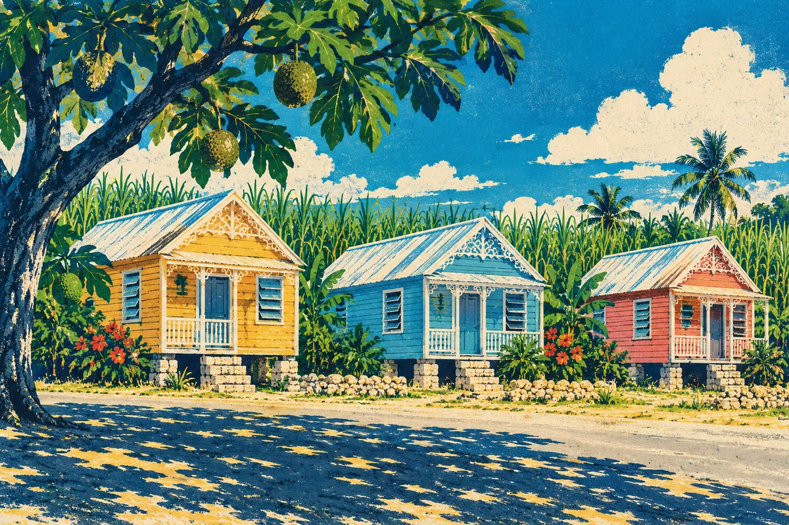

Jamaica
Parish registers from 1664, civil registration from 1878, and our largest sub-group to help you read them.
Parish registers, slave registers, civil records and archives vary from island to island. Start with the one your family came from.
Parish registers from 1664, civil registration from 1878, and our largest sub-group to help you read them.

Some of the oldest parish registers in the Caribbean, and a sub-group that works through them together.
Two islands with separate archives. Our sub-group helps you work out which records you need.
Spanish, French and British records side by side, and the records of indentured workers from India.
A small island with a large diaspora. Read how one member traced her family from Montserrat back to Africa.